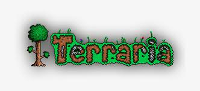
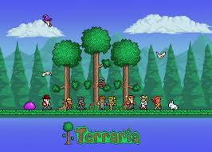
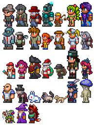

Terraria es un videojuego de mundo abierto en 2D. Contiene elementos de construcción, exploración, aventura y combate, muy similar a juegos clásicos de la consola Super NES, como por ejemplo la serie Metroid, y a otras entregas no tan antiguas como Minecraft.

El juego comienza en un mundo creado de forma aleatoria. El usuario puede personalizar a su personaje; cambiando el estilo de su pelo, camisa, pantalones, así como el color de los mismos, su género, entre otras personalizaciones que permite el juego. El jugador tiene a su disposición herramientas de distintos tipos, las cuales sirven para moldear el mundo y trabajar los recursos que el jugador encuentre (tales como minerales). Así mismo, el jugador inicia con una cantidad limitada de vida y puntos de magia, los cuales puede incrementar. También es posible mejorar al personaje incrementando su ataque, defensa, velocidad, entre otros, usando distintos objetos obtenibles en el transcurso de la partida. El jugador puede utilizar los materiales y recursos que va encontrando para crear nuevos objetos, tales como armas, armaduras, pociones, etc., siendo los objetos más avanzados los más difíciles de crear.

El jugador puede encontrar una gran variedad de enemigos en Terraria, los cuales aparecen dependiendo de diversos factores que incluye la hora, el lugar, eventos especiales e interacciones que hace el personaje. El jugador puede pelear contra sus enemigos con diversas armas como espadas, arcos, armas de fuego, armas mágicas, etc. También se puede batallar con jefes, los cuales dan objetos importantes al ser derrotados y son sumamente difíciles de matar. La mayoría se encuentran o son invocables en determinados biomas, lugares y/o franjas horarias, como «El Muro de Carne» que se encuentra en el infierno, «El Devoramundos» proveniente del bioma «Corrupción», «Esqueletrón» perteneciente a «La Mazmorra», el «Ojo de Cthulhu» el cual solo es invocable en la noche, o también puede ser el caso de «Plantera», la cual se invoca en la selva destruyendo una flor rosada llamada: «Bulbo de
Plantera». Todos los jefes pueden ser invocados con sus respectivos invocadores.
-NPCs
Completando diferentes requisitos (por ejemplo derrotar a un jefe u obtener objetos específicos) el jugador puede atraer NPC los cuales ocuparán una casa siempre y cuando estas cumplan con los requerimientos necesarios. El juego posee un sistema de comercio en forma de monedas, en el cual el jugador puede comprar o vender diversos objetos a los NPC. Las monedas se consiguen matando monstruos, destruyendo jarrones, encontrando tesoros o vendiendo objetos a los NPC.

Hay un total de 31 NPC, de los cuales 28 necesitan una casa en la que pueda vivir. Los otros 3 no se mudan a las casas. Estos personajes pueden, entre otras cosas, curar, atacar monstruos, así como vender artículos. Los NPC también aparecerán dependiendo del modo de dificultad, cual se cambia cuando elimines a cierto jefe en cierto momento del juego. El juego también incluye biomas endémicos y/o únicos como el inframundo, «La Corrupción», «El Carmesí», los bosques, la selva, la tundra y el desierto. Todos ellos están caracterizados por un set único de bloques, así como enemigos únicos. Si el jugador viaja al bioma del inframundo, invoca y destruye al jefe conocido como «La muralla de Carne», el juego entrará en el «Modo Difícil», el cual añade nuevos y más difíciles enemigos a través del mundo, así como, los ya nombrados, nuevos NPC, jefes, minerales y objetos.
Así mismo, también existe el «Modo Experto» como nivel de dificultad.4 Si es activado al crear un mundo se incrementa la dificultad del juego haciendo que los enemigos tengan el doble de vida y de daño, dichas estadísticas incrementan después de entrar el «Modo Difícil», así mismo, da a los jefes nuevos patrones de ataque, disminuyendo la regeneración de vida, etc. También añade accesorios exclusivos de este modo, los cuales solo se pueden obtener al vencer jefes y aumenta las chances de obtener objetos en comparación al modo normal
En la versión 1.4 se añadió un nuevo modo más difícil que el «Modo Experto», llamado «Modo Maestro», en el cual la dificultad aumenta mucho más, los enemigos tienen más daño, más vida, los jefes tienen un 50% más de daño en comparación al «Modo Experto», al entrar al modo difícil aumenta grandemente la vida y el daño de enemigos, etc. Cómo recompensa al jugador, añade un nuevo espacio para accesorios, nuevas mascotas y reliquias exclusivas de este modo.